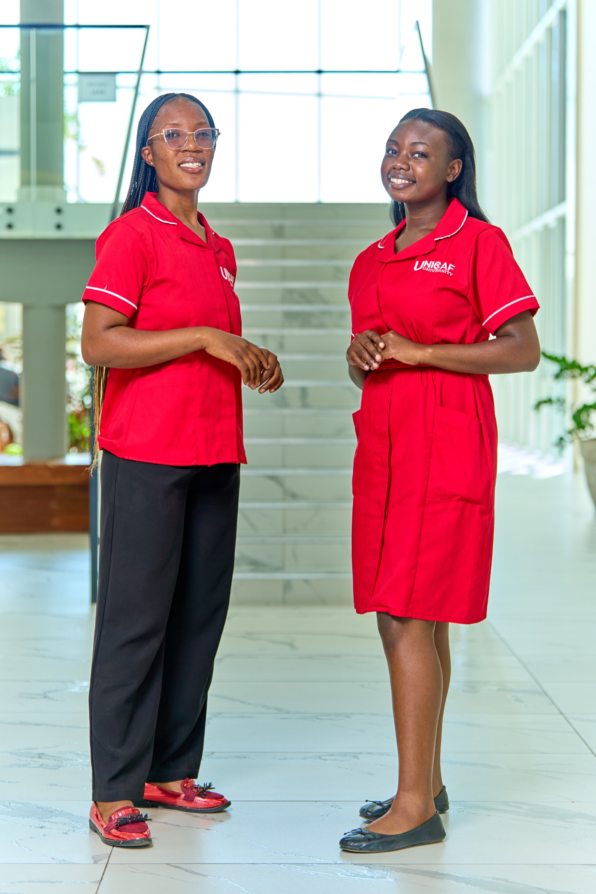
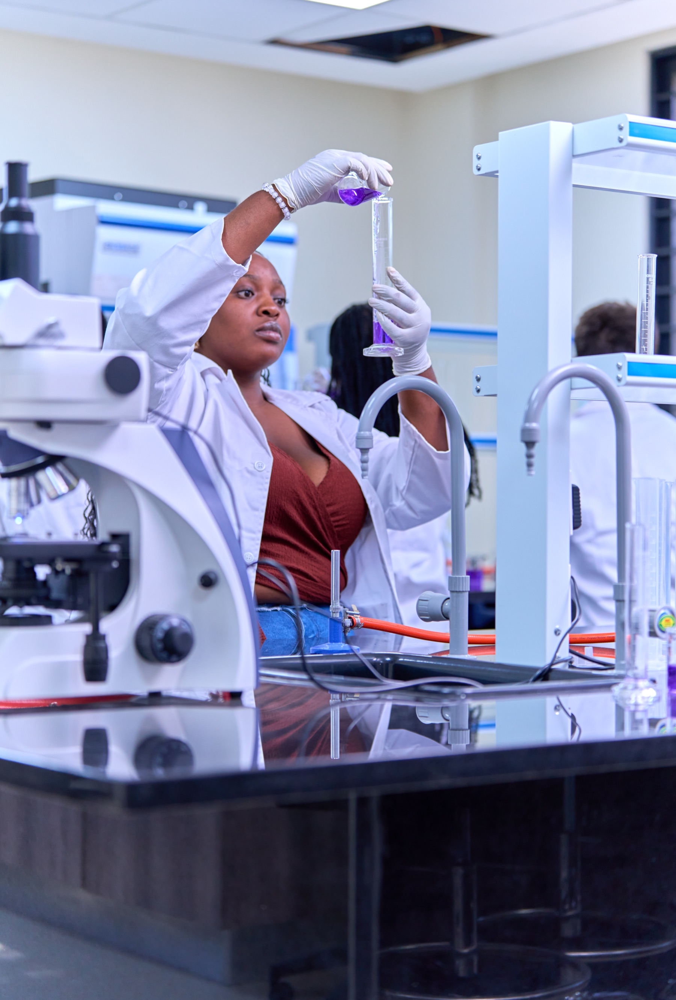
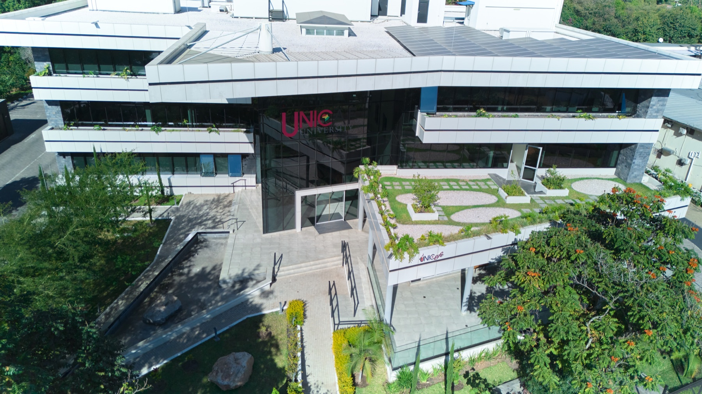
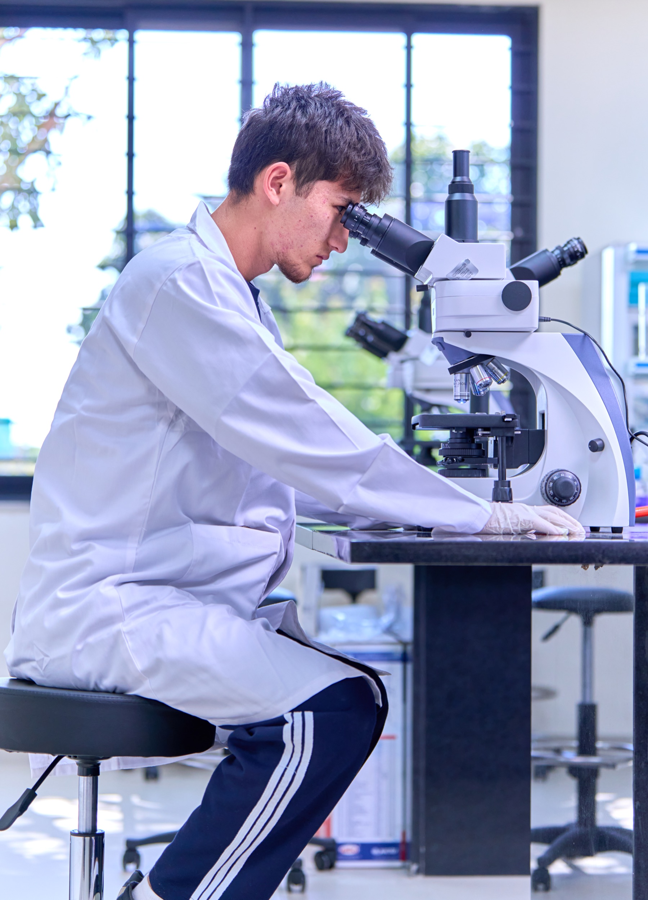

Study options / UNICAF University
Find the course that moves you forward.
Browse the Zambia programme finder in one place. Choose a course to see a short overview and ask FSF about your next step.
A closer look
See yourself here.
People. Places. Possibility.




Programme finder
Explore 41 programmes.
Search by subject or narrow the list by level and study mode. Select any course to open an enquiry with FSF.
Programme names and study modes follow UNICAF University’s Zambia Programme Finder. Course summaries are concise paraphrases of programme aims. Availability, entry requirements and scholarship eligibility can change; ask FSF to confirm current details.
Need help choosing?
Ask FSF about courses and your next steps.